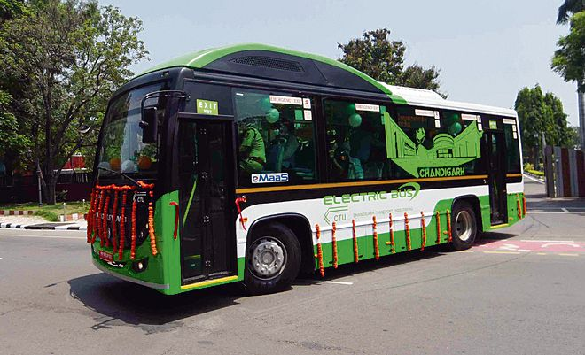
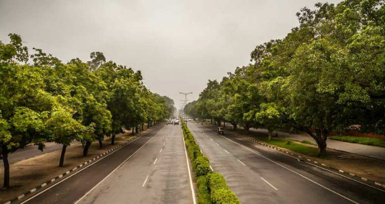

<!DOCTYPE HTML>
<html>
	<head>
		<title>Chandigarh Tourism</title>
		<meta http-equiv="content-type" content="text/html; charset=utf-8" />
		<meta name="description" content="Chandigarh is the only city in India that serves as the capital of two states, Punjab and Haryana, simultaneously. It is one of the union territories of India and derives its name from Chandir Mandir, a temple of Goddess Chandi, located in the nearby Panchkula district (Haryana)." />
		<meta name="keywords" content="Chandigarh,Chandigarh Tourism,Rose Garden Chandigarh,Rock Garden Chandigarh,Visit Chandigarh,Photos Chandigarh,Videos Chandigarh,Places Chandigarh" />
		<!--[if lte IE 8]><script src="js/html5shiv.js"></script><![endif]-->
		<script src="js/jquery.min.js"></script>
		<script src="js/skel.min.js"></script>
		<script src="js/skel-layers.min.js"></script>
		<script src="js/init.js"></script>
		<noscript>
			<link rel="stylesheet" href="css/skel.css" />
			<link rel="stylesheet" href="css/style.css" />
			<link rel="stylesheet" href="css/style-xlarge.css" />
		</noscript>
	</head>
	<body id="top">

		<!-- Header -->
			<header id="header" class="skel-layers-fixed">
				<h1><a href="index.html">Chandigarh Tourism</a></h1>
				<nav id="nav">
					<ul>
						<li><a href="index.html">Home</a></li>
						<li><a href="history.html">History</a></li>
						<li><a href="photogallery.html">Photo Gallery</a></li>
						<li><a href="gallery.html">Video Gallery</a></li>
						<li><a href="placestovisit.html">Place to Visit</a></li>
						<li><a href="howtoreach.html">How to Reach</a></li>
						<li><a href="travel.html">Travel</a></li>
						<li><a href="map.html">Map</a></li>
						<li><a href="contact.html">Contact Us</a></li>
					</ul>
				</nav>
			</header>

             


<!-- Main -->
			<section id="main" class="wrapper style1">
				<header class="major">
					<h2>Navigating Chandigarh</h2>
				</header>
				<div class="container">
					<section>
						<center><h2>Travel Tips</h2></center>
					<div class="row">
						<div class="6u">
							<section class="special">
							<a href="images/public.jpg" target="_blank" class="image fit"></a>
							<h3>Public transportation</h3>
<h5>Chandigarh boasts an efficient public 
transportation system, including a modern metro 
network, well-connected bus routes, and autorickshaws, making it easy for visitors to explore 
the city without the hassle of private vehicles.</h5>
							</section>
						</div>
						<div class="6u">
							<section class="special">
								<a href="images/weather.jpg" target="_blank" class="image fit"></a>
								<h3>Weather Consideration</h3>
<h5>Chandigarh experiences a pleasant subtropical 
climate, with relatively mild summers and cool 
winters. Visitors are advised to pack layers and 
check the weather forecast to make the most of 
their visit, regardless of the season.</h5>
							</section>
						</div>
					</div>
					<hr class="major" />
					<div class="row">
						<div class="6u">
							<section class="special">
								<a href="images/safety.jpg" target="_blank" class="image fit"></a>
								<h3>Safety and Security</h3>
<h5>Chandigarh is known for its low crime rates and 
high safety standards, making it a secure 
destination for travellers. However, it's still 
recommended to exercise caution and follow 
standard safety practices, such as avoiding 
isolated areas and keeping valuables secure.</h5>
							</section>
						</div>
						<div class="6u">
							<section class="special">
								<a href="images/local.jpg" target="_blank" class="image fit"></a>
								<h3>Local Customs and Etiquette</h3>
<h5>As a cosmopolitan city, Chandigarh welcomes 
visitors from all backgrounds, but it's important 
to be mindful of local customs and etiquette, such 
as dressing conservatively in religious sites and 
respecting the city's green spaces and public 
areas.</h5>
							</section>
						</div>
					


<!-- Footer -->
			<footer id="footer">
				<div class="container">
					<div class="row double">
						<div class="6u">
							<div class="row collapse-at-2">
								<div class="6u">
									<h3>Navigate</h3>
									<ul class="alt">
										<li><a href="index.html">Home</a></li>
						<li><a href="history.html">History</a></li>
						<li><a href="photogallery.html">Photo Gallery</a></li>
						<li><a href="gallery.html">Video Gallery</a></li>
						<li><a href="placestovisit.html">Place to Visit</a></li>
						<li><a href="howtoreach.html">How to Reach</a></li>
						<li><a href="travel.html">Travel</a></li>
						<li><a href="map.html">Map</a></li>
						<li><a href="contact.html">Contact Us</a></li>
									</ul>
								</div>
							</div>
						</div>
						
						<div class="6u">
							<h2>Chandigarh Tourism</h2>
							<p>Chandigarh is the only city in India that serves as the capital of two states, Punjab and Haryana, simultaneously. It is one of the union territories of India and derives its name from Chandir Mandir, a temple of Goddess Chandi, located in the nearby Panchkula district (Haryana). </p>
							<ul class="icons">
								<li><a href="https://twitter.com/i/flow/signup" class="icon fa-twitter"><span class="label">Twitter</span></a></li>
								<li><a href="https://www.facebook.com/" class="icon fa-facebook"><span class="label">Facebook</span></a></li>
								<li><a href="https://www.instagram.com/" class="icon fa-instagram"><span class="label">Instagram</span></a></li>
								<li><a href="https://in.linkedin.com/" class="icon fa-linkedin"><span class="label">LinkedIn</span></a></li>
								<li><a href="https://in.pinterest.com/" class="icon fa-pinterest"><span class="label">Pinterest</span></a></li>
							</ul>
						</div>
					</div>
					<ul class="copyright">
						<li>&copy; All rights reserved.</li><br>
						<li>&copy; Designed by Shivam, Charanjit</li>

					</ul>
				</div>
			</footer>

	</body>
</html>